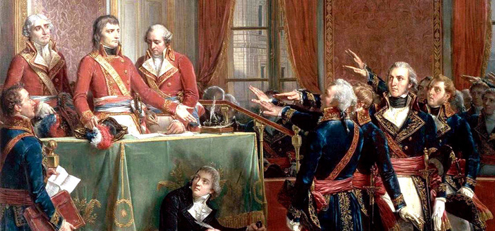

-
Menu
Il direttorio e l'ascesa di Napoleone
Dopo la caduta di Robespierre, fu istituito un nuovo governo chiamato Direttorio (1795-1799), composto da cinque membri.
Il Direttorio fu caratterizzato da corruzione e instabilità.
Napoleone ottenne grandi successi militari in Italia e in Egitto.
Nel 1799, con il colpo di Stato del 18 brumaio, prese il potere.
